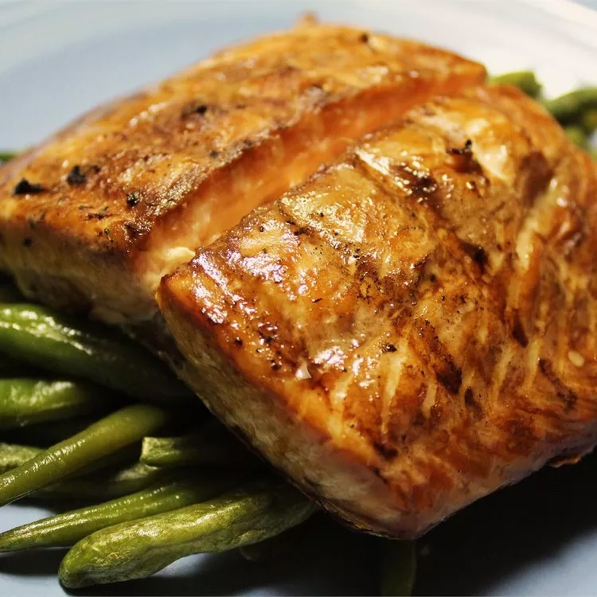

Gilled Salmon

Description
This grilled salmon tastes so good! A simple soy sauce and brown sugar marinade,
with hints of lemon and garlic, are the perfect salty-sweet complement to rich
salmon fillets. Even my 9-year-old loves this recipe! Serve with a side of
grilled zucchini or grilled corn.
Ingredients
- 1 ½ pounds salmon fillets
- lemon pepper to taste
- garlic powder to taste
- salt to taste
- ⅓ cup soy sauce
- ⅓ cup brown sugar
- ⅓ cup water
- ¼ cup vegetable oil
Instructions
- Season salmon fillets with lemon pepper, garlic powder, and salt.
- Stir soy sauce, brown sugar, water, and vegetable oil together in
a small bowl until sugar is dissolved. Place fish in a large resealable
plastic bag; add soy sauce mixture, seal, and turn to coat. Refrigerate
for at least 2 hours.
- Preheat an outdoor grill for medium heat and lightly oil the grate.
- Place salmon on the preheated grill, and discard marinade. Cook salmon
until fish flakes easily with a fork, about 6 to 8 minutes per side.